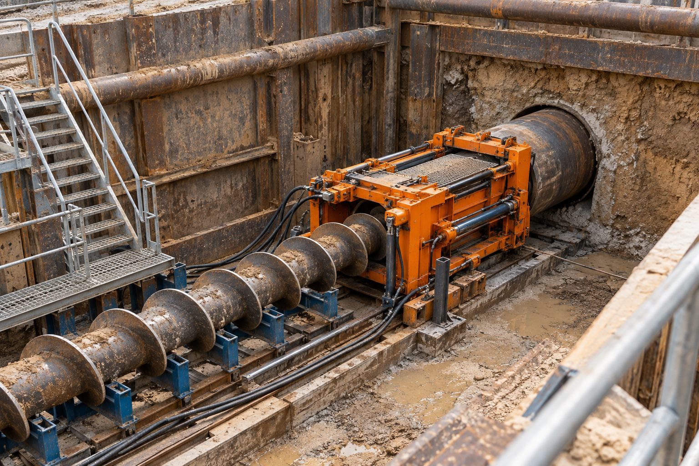

Kotta hassasiyet
Delgi, projede belirlenen kot ve doğrultuda sabit eğimle ilerler.
Hizmetlerimiz · 02

Yatay Delgi
Boru veya kılıf geçişi için farklı zemin ve proje koşullarında planlanan yatay delgi uygulamaları.
Yatay delgi; helezonlu (auger) ve yönlendirmeli sistemlerle, belirlenen kotta ve doğrultuda yatay bir delik açılarak boru ya da kılıf yerleştirilmesini kapsar. Kısa ve orta mesafeli geçişlerde, özellikle yük altındaki yol ve demiryolu kesitlerinde yaygın olarak kullanılır.
Delgi çapı, uzunluğu ve zemin yapısı keşifte belirlenir; buna göre makine, delgi takımı ve kılıf borusu seçilir. Uygulama giriş ve çıkış çukurları arasında, yüzeye dokunmadan tamamlanır.
Neden Yiba?
Delgi, projede belirlenen kot ve doğrultuda sabit eğimle ilerler.
Çelik veya HDPE kılıf borular geçişi uzun yıllar korur.
Yol ve ray yükü altındaki kesitlerde açık kazıya güvenli alternatif.
Zemin ve çapa göre helezon ya da yönlendirmeli sistem seçimi.
Sık sorulan sorular
Yatay delgi genellikle düz ve sabit eğimli kısa geçişlerde, yönlendirilebilir yatay sondaj ise yer altında yönlendirme gerektiren daha uzun ve eğrisel güzergâhlarda kullanılır.
Proje ihtiyacına göre küçük çaplı koruma borularından büyük çaplı çelik kılıflara kadar uygulama yapılabilir; kesin aralık keşif sonrası belirlenir.
Delgi çapı ve makine boyutuna göre değişir; dar şehir içi alanlara uygun kompakt sistemler de kullanılır.